EVO: A Geometric Approach to Event-Based 6-DOF Parallel Tracking and Mapping in Real Time
Henri Rebecq, Timo Horstschaefer, Guillermo Gallego, and Davide Scaramuzza
Abstract—We present EVO, an event-based visual odometry algorithm. Our algorithm successfully leverages the outstanding properties of event cameras to track fast camera motions while recovering a semidense three-dimensional (3-D) map of the environment. The implementation runs in real time on a standard CPU and outputs up to several hundred pose estimates per second. Due to the nature of event cameras, our algorithm is unaffected by motion blur and operates very well in challenging, high dynamic range conditions with strong illumination changes. To achieve this, we combine a novel, event-based tracking approach based on imageto-model alignment with a recent event-based 3-D reconstruction algorithm in a parallel fashion. Additionally, we show that the output of our pipeline can be used to reconstruct intensity images from the binary event stream, though our algorithm does not require such intensity information. We believe that this work makes significant progress in simultaneous localization and mapping by unlocking the potential of event cameras. This allows us to tackle challenging scenarios that are currently inaccessible to standard cameras.
Index Terms—SLAM, localization, mapping.
SUPPLEMENTARY MATERIAL
A video showing the performance of our method in several sequences is available at: https://youtu.be/bYqD2qZJlxE
I. INTRODUCTION
N EVENT camera, such as the Dynamic Vision Sensor (DVS) [1], works very differently from a traditional
camera. It has independent pixels that send information (called
“events”) only in presence of brightness changes in the scene at
the time they occur. Thus, the output is not an intensity image
but a stream ofasynchronous events at microsecond resolution.
Each event consists of its space-time coordinates < x, y, t, p >,
where p denotes the polarity of the brightness change. Since
events are caused by brightness changes over time, an event camera naturally responds to edges in the scene in presence of relative motion.
Event cameras bring the following advantages to one of the core problems in robotics, that is, Simultaneous Localization and Mapping (SLAM): low-latency, robustness, and efficiency. (i) Notably, event cameras have negligible latency (microseconds), and so they have the potential to enable fast maneuvers of robotic platforms [2], [3], which are currently not possible with standard cameras because of the high latency of the sensing and processing pipeline (in the order of tens of milliseconds). (ii) Event cameras confer robustness to vision-based navigation in challenging conditions for standard cameras, such as highspeed motions and very high dynamic range (HDR) scenes (up 130 dB vs 60 dB of standard cameras). (iii) Event cameras have low power consumption characteristics (20 mW vs 1.5 W ofstandard cameras) and low bandwidth (100 kB/s on average vs 10 Mb/s for a standard camera), producing an event stream that is sparse and has no redundant data. An ideal event-based visual navigation algorithm would not process redundant data, thus it would be computationally very efficient, allowing on-board processing in real-time. However, unlocking the advantages of event cameras for SLAM and other standard vision problems is very challenging. This is due to the fact that the output of event cameras is fundamentally different from that of standard cameras, so that traditional vision algorithms cannot be applied; thus, new methods to process the data from these novel cameras must be investigated.
Contribution: In this paper, we tackle the problem of performing real-time, 6-DOF parallel tracking and mapping with an event camera in natural scenes. Over the past few years, several works have made contributions towards this goal; some approaches studied motion estimation from known 3D maps, while others worked on 3D mapping from known poses (see more in Section II). Preliminary work to solve this very challenging problem was recently proposed in [12] using Bayesian filtering and variational methods. However, the approach required the estimation of the image intensity and regularization of the depth, thus demanding dedicated hardware, such as a GPU, in order to run in real time. Additionally, no quantitative evaluation of the method was provided. The method we propose—which we call EVO (Event-based Visual Odometry)—is purely geometric and, in contrast to [12], does not require the estimation of the image intensity, thus (i) it prevents the propagation of errors from such estimation and (ii) it is computationally efficient (it can run in real time on a standard CPU). Our contributions are: (i) a novel event-based tracking approach based on image-tomodel alignment using edge maps (Sections III-A, IV) and (ii) its integration with a recent event-based 3D reconstruction algorithm [10] to produce the first parallel tracking and mapping pipeline for event cameras that runs in real-time on the CPU. EVO can estimate up to several hundreds of poses per second while recovering a semi-dense, 3D map of the environment. As a by-product, we also show that the output of our algorithm can be used, if desired, to recover image intensity. Additionally, we provide a quantitative evaluation in challenging sequences, both indoors and outdoors, which show how we unlock the potential of event cameras.
II. RELATED WORK
Solving the event-based SLAM problem in its most general setting (6-DOF motion and natural 3D scenes) with a single event camera is a challenging problem. Historically, this problem has been addressed step-by-step in scenarios with increasing complexity. Three complexity axes can be identified: dimensionality of the problem, type of motion and type of scene. The literature is dominated by methods that address the localization subproblem first (i.e., motion estimation) since it has fewer degrees of freedom to estimate (i.e., lower dimensionality) and data association is easier than in the mapping subproblem or the combined tracking and mapping problem. Regarding the type of motion, solutions for constrained motions, such as rotational or planar (both being 3-DOF), have typically been investigated before addressing the most complex case of a freely moving camera (6-DOF). Solutions for artificial scenes in terms of photometry (high contrast) and/or structure (line-based or 2D maps) have been proposed before focusing on the most difficult cases: natural scenes (3D and with arbitrary photometric variations). Finally, some methods are not solely based on events but require additional sensing (e.g., grayscale or RGBD) to reduce the complexity of the problem. This, however, has the drawback of introducing the same bottlenecks that exist in standard framebased systems (e.g, latency and motion blur). Table I classifies the related work according to the complexity axes mentioned.
Let us focus on references that address the tracking-andmapping problem. Cook et al. [4] proposed a generic messagepassing algorithm within an interacting network to jointly estimate ego-motion, image intensity and optical flow from events. However, the system was restricted to rotational motion and did not account for translation and depth.
An event-based 2D SLAM system was presented in [5]. However, the system design was limited to planar motions (i.e., 3-DOF) and planar scenes parallel to the plane of motion consisting of artificial B&W line patterns. The method was extended to 3D in [8] but relied on an external RGB-D sensor attached to the event camera for depth estimation. The depth sensor introduces bottlenecks, which deprives the system of the low latency and high-speed advantages of event cameras.
A filter-based system to estimate the 3D orientation of an event camera while generating high-resolution panoramas of natural scenes was presented in [6]. The system was limited to rotational motion, thus ignoring translation and depth.
A visual odometry system operating in a parallel trackingand-mapping manner was presented in [11]. The system recovered 6-DOF motions in natural scenes by tracking a sparse set of features using the event stream. However, the system required intensity images to first detect the features. Finally, [12] proposed a system with three interleaved probabilistic filters to perform pose tracking as well as depth and intensity estimation in natural scenes. However, evaluations were only qualitative and the system required the estimation of the intensity. Moreover, it was computationally expensive, requiring a GPU to reconstruct the image intensity and regularize the depth in real time. Thus, it is not suitable for computationally limited platforms.
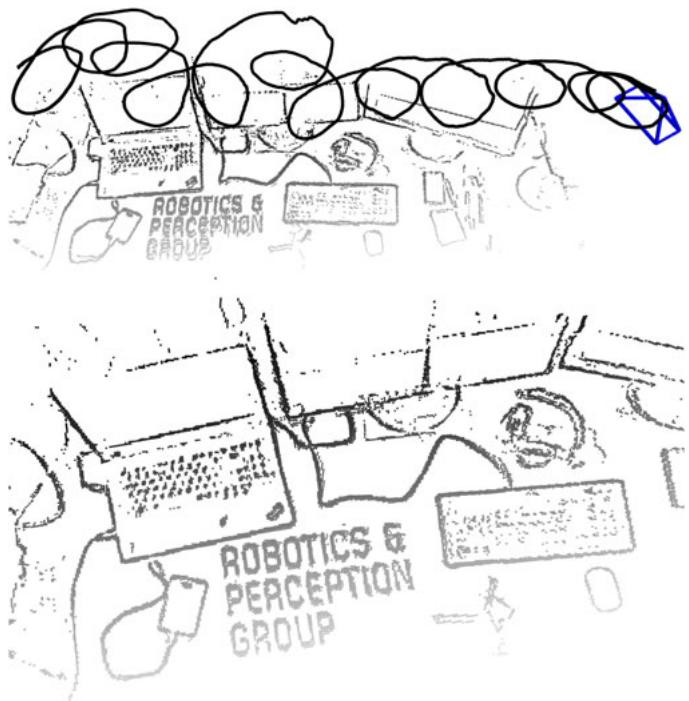
Fig. 1. Example of trajectory and 3D map estimated by EVO using only events.
The system we present in this paper, EVO, tackles the eventbased 3D SLAM problem for 6-DOF motions and natural scenes, and does not rely on any external sensor. That is, we address the most general scenario, as [12] (see Table I). However, contrarily to [12], our geometric approach is computationally efficient (runs in real-time on the CPU in case of moderate motions), and does not need to recover image intensity to estimate depth, which prevents propagation of errors from such estimation (although we show that intensity images can be recovered, if desired, using the output of our algorithm).
III. EVENT-BASED PARALLEL TRACKING AND MAPPING
The core of EVO consists of two interleaved tracking and mapping modules (blocks marked with dashed lines in Fig. 2), thus following the separation principle of SLAM systems, such as PTAM [13]. The tracking module estimates the 6-DOF pose ofthe event camera using the event stream, assuming that a semidense 3D map of the environment is given. The mapping module expands the semi-dense 3D map as new events are triggered, assuming that pose information is given. Both modules operate in parallel, each relying on the output of the other. We first present each module separately and then describe the way in which they are combined, as in Fig. 2 .
TABLE I
LITERATURE REVIEW ON EVENT-BASED METHODS FOR POSE TRACKING AND/OR MAPPING WITH A SINGLE EVENT CAMER
| Reference | 2D/3D | Tracking | Depth | Scene type | Event-only | Additional requirements |
| Cook et al. 2011 [4] | 2D | √ | x | natural | √ | rotational motion only |
| Weikersdorfer et al. 2013 [5] | 2D | √ | x | B& W, lines | √ | scene parallel to the plane of motion |
| Kim et al. 2014 [6] | 2D | √ | x | natural | √ | rotational motion only |
| Censi et al. 2014 [7] | 3D | √ | x | B&W | x | requires depth from attached RGB-D sensor |
| Weikersdorfer et al. 2014 [8] | 3D | √ | √ | natural | x | requires depth from attached RGB-D sensor |
| Mueggler et al. 2014 [2] | 3D | √ | x | B& W, lines | √ | requires 3D map of lines |
| Gallego et al. 2016 [9] | 3D | √ | x | natural | x | requires 3D map of the scene |
| Rebecq et al. 2016 [10] | 3D | x | √ | natural | √ | requires pose information |
| Kueng et al. 2016 [11] | 3D | √ | √ | natural | x | requires intensity images |
| Kim et al. 2016 [12] | 3D | √ | √ | natural | √ | requires intensity reconstruction and GPU |
| This work | 3D | √ | √ | natural | √ |
The type of motion is noted with labels “2D” (3-DOF motions, such as planar or rotational) and “3D” (free 6-DOF motion in 3D space). Note that only [12] and this work address the most general scenario (“3D” using only events).
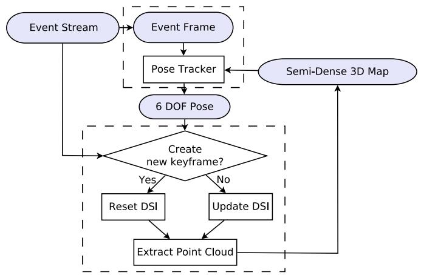
Fig. 2. Block diagram of our event-based parallel tracking and mapping method, EVO. “DSI” denotes the Disparity Space Image, as described in Section III-B.
A. Pose Tracking
Our tracking module relies on image-to-model alignment, which is also used in frame-based, direct VO pipelines [14], [15]. In these approaches, a 3D rigid body warp is used to register each incoming intensity image to a keyframe. They minimize the photometric error on a set of selected pixels whose 3D correspondences in the scene have already been established.
We follow the same global image alignment strategy, but, since event cameras naturally respond to edges in the scene, we replace the photometric error by a geometric alignment error between two edge images (see Eq. (1)). The two images involved in the registration process are (see Fig. 3): an event image I, obtained by aggregating a small number of events into an edge map, and a template M, which consists of the projected semidense 3D map of the scene according to a known pose of the event camera.
Registration is done using the inverse compositional Lucas-Kanade (LK) method [16], [17], by iteratively computing the incremental pose ΔT that minimizes
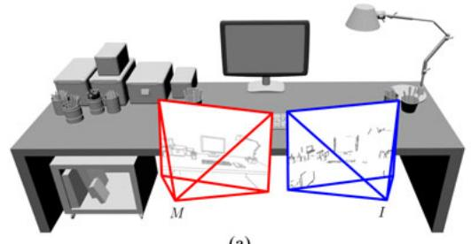
(a)
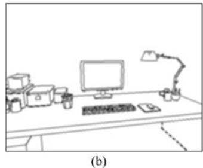
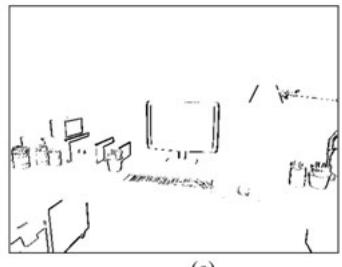
(c)
Fig. 3. Pose Tracking computes the pose of the camera with respect to a reference pose by aligning the event image I with the projected semi-dense map M. Edges parallel to the camera motion are not captured by the event sensor. (a) 3D scene and poses involved in the registration process. (b) Projected semi-dense mapM. (c) Event image I.
and then updating the warp W, which leads to the following update of the rigid-body transformation T from the frame of M to the frame of I:
In the inverse approach (1), the projected map M is warped until it is aligned with the warped event image given by the current estimate of the registration transformation T. The 3D rigid-body warp W is defined by
where u is a point in the image plane of M, T is a rigid-body transformation, π and denote the camera projection and inverse projection, respectively, and is the known depth of the 3D point projecting on pixel u. Hence, the sum in (1) is over all candidate pixels u in the domain of M for which there is an associated depth estimate . The 3D rigid-body warp is defined so that is the identity, as required in [16]. Rigid-body transformations are parametrized using twist coordinates [18]: , with and Lie algebra element
Since both I and M carry information about edges, the objective function (1) can be interpreted as a measure of the registration error between two edge maps: the measured one using the events and the predicted one from the projection of the 3D edge map. Due to the principle of operation of the event camera, the event image I captures all edges except those parallel to the apparent motion.
The inverse compositional LK method has the advantage of low computational complexity with respect to other LK formulations [16]: the derivatives that depend on M can be precomputed since M remains constant during the iteration. Additionally, these computations can be re-used for aligning multiple event images I with respect to the same M.
For efficiency, we use analytical derivatives of the error function (1), which involve, by the chain rule, computing the gradient ∇M and the derivative of the warping function with respect to the exponential coordinates of the unknown incremental pose ΔT. Using calibrated coordinates and assuming that lens distortion has been removed, , the latter derivative is given by the interaction matrix [19]
Finally, the poses T obtained upon convergence of the LK method (2) are filtered using an average filter to get a smoother trajectory of the event camera.
B. Mapping
EVO’s mapping module uses the events and their corresponding camera poses to update a local semi-dense 3D map (see Fig. 2). Our approach is based on the Event-based Multi-View Stereo (EMVS) method recently proposed in [10], which is a purely geometric approach to 3D reconstruction with a single event camera. It leverages the fact that event cameras naturally respond to edges to recover semi-dense 3D information from the event stream, without requiring intensity information or explicit data association. The main idea behind this method is illustrated in Fig. 4(a): the rays back-projected from the events highlight the regions of space where 3D edges are likely to occur. Poses for event back-projection are obtained by interpolating the tracked poses at the timestamps of the events.
The EMVS method discretizes space into a projective voxel grid (called Disparity Space Image–DSI) centered at a chosen reference viewpoint and counts the number of rays intersecting each voxel in the grid [Fig. 4(b)]. The local maxima of the DSI yield a point cloud of locations where 3D edges are most likely to occur. The point cloud is extracted in two steps (Fig. 5): first, the DSI [Fig. 5(a)] is collapsed into a depth map and an associated 2D confidence map [Fig. 5(b)], and second, the confidence map is adaptively thresholded to keep the most confident local maxima of the DSI, yielding a semi-dense depth map [Fig. 5(c)] that is finally converted into a point cloud [Fig. 5(d)].
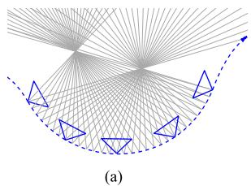
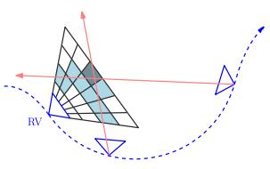
(b)
Fig. 4. Mapping: the main idea ofthe EMVS [10] method used in our mapping module of Fig. 2. Images courtesy of [10]. (a) As the event sensor moves, events are triggered by edges in the scene. Back-projection of the events provides rays through space. The regions of high ray density mark the candidate locations of 3D edges. (b) Space is discretized using a voxel grid (DSI) centered at a virtual camera in a reference viewpoint (RV). Each voxel value (in blue) is the number of back-projected events (red rays) traversing it.
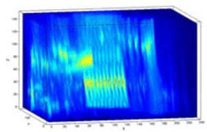
(a)
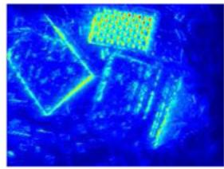
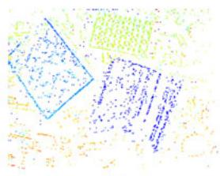
(c)
(b)
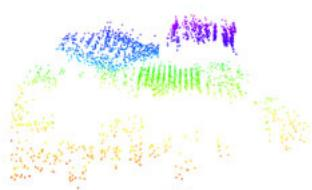
(d)
Fig. 5. Mapping: the EMVS method [10] builds the ray density DSI (a), from which a confidence map (b) and a semi-dense depth map (c) are extracted in a virtual camera. The semi-dense depth map gives a point cloud of scene edges (d). Images courtesy of [10]. (a) Ray density DSI. (b) Confidence map. (c) 2D semi-dense depth map. (d) 3D point could.
C. Parallel Tracking and Mapping
Let us describe how the tracking and mapping modules are interleaved in EVO to track the camera pose while continuously updating and expanding the map of the environment.
We follow a keyframe-based approach, where keyframe (KF) poses are selected along the event camera trajectory. A new local map of the scene that is used for tracking is built upon the creation of a keyframe (Fig. 2). Hence, a KF should be created when the map is required to be expanded, that is, when the existing map turns insufficient for tracking. Our system creates a KF whenever the distance between the current camera pose and the last KF, divided by the mean scene depth, reaches a threshold (e.g., 15%). This ensures that the map is updated regularly as the event camera moves.
The creation of a KF triggers the creation of an associated local map from that viewpoint. The mapping thread processes the request (“Reset DSI” in Fig. 2) while the tracking thread continues to track using the map from the previous KF, and switches to the new map as soon as it is available. The DSI is recomputed using the last 2 million events. The map associated to a KF is refined as new events are triggered: every incoming event is used to update the current KF DSI, and every 100 thousand events a refined point cloud that replaces the current one for tracking purposes is extracted from the DSI (“Update DSI” in Fig. 2).
D. Bootstrapping
To bootstrap the algorithm, we estimate an initial trajectory and 3D map during the first τ seconds as follows: first, we run the pose tracker up to time τ assuming that the local scene is planar and fronto-parallel to the sensor, and then we run the mapper to compute an initial 3D map using all the events and poses estimated by the tracker up to time τ . We observed that this strategy, despite its simplicity, is often sufficient to correctly bootstrap the system.
E. Intensity Image Reconstruction
EVO does not require intensity reconstruction to operate. Nevertheless, we show how the output of EVO can be used to generate intensity images of the mapped scene. To this end, we extended the intensity reconstruction algorithm from [6] (originally developed to reconstruct a panoramic image from purely rotational motions) to work with 3D scenes and 6-DOF motions. In essence, intensity reconstruction is based on the linearized generative model for the event camera, which combines the constant brightness assumption with the operating principle of event cameras (an event is triggered when the change in log-intensity L reaches the contrast threshold, Δ log :
where all the quantities needed are known except for the gradient of the image (∇L) at a given point. Once the gradient image ∇L has been estimated, Poisson reconstruction is used to obtain the intensity image L. We refer to [6], [20] for more details. Note that the resulting images exhibit super-resolution and high-dynamic range (HDR) properties, and do not suffer from motion blur.
IV. IMPLEMENTATION DETAILS
In this section, we describe the implementation details of the proposed pipeline, EVO. The reader who is not interested in the details can jump directly to Section V.
A. Pose Tracking
1) Creation of Alignment Images M and I: The projection of the semi-dense, 3D map onto the reference pose yields a binary image M: pixels where map points project are set to 1; the rest, to zero. To use it in the LK method and increase the basin of attraction of the minimizer of the error function, we smooth M using a Gaussian filter with a small standard deviation pixels. The smoothing of the projected map image gives an intensity distribution that approximates the distance function to the actual projected edge map.
The event image I is binary, built by collecting a varying number of events : pixels where events fired are set to 1; otherwise they are set to zero. We adapt the size of the observation window to the scene: is a fraction (e.g., 70 %) of the number of points in the current 3D map. This gives an estimate of the number of events that need to be considered to produce a reasonably complete edge map of the scene while collecting no more than one event per pixel. On average, we accumulate about 2000 events, which translates into a time span of 0.6ms to 2ms, given an event rate of 1–3 million events/s.
Moreover, we use a sliding window on the event stream to build the event image I. The shift (in number of events) between the first events of adjacent windows allows us to control the rate of the computed poses: we may reuse events for several pose estimates or skip events to speed up tracking.
2) Tracking Improvements: To speed up tracking, we subsample the number of candidate pixels u in (1) in each iteration. We use the stochastic gradient descent, which means we divide the set of pixels {u} into random subsets of a given batch size. Then, for each iteration of the LK method we only process a single batch instead of the complete set . The batch size is around 300–500 pixels. A typical reference image M has around 10k non-zero pixels, which gives 20–30 batches. To increase tracking precision, we use up to 5 optimization iterations (called epochs), meaning that we repeat the described process several times. For comparison, SVO [14] uses up to 30 iterations. This allows us to compute more than 500 poses per second on a single CPU. Since the temporal resolution of the event camera is very high and few events are accumulated per event image two consecutive event images are very close in time and alike. In fact, the displacement between corresponding points in the images is typically less than one pixel, hence the pose of is very close to the known pose of , and therefore, there is no need to use a coarse-to-fine alignment approach, which is typically used for larger inter-image motions.
B. Mapping
1) Inverse Depth: The main difference with respect to the original method of [10] is that, to allow for mapping far away objects, we discretize the DSI volume using depth planes uniformly spaced in inverse depth. We typically use a DSI with 50 depth planes, and adapt the depth range (minimum and maximum depths) to the characteristics of the scene.
2) Noise Reduction: We apply a median filtering (typical size: 15 × 15 pixels) on the resulting semi-dense depth map (we only consider pixels with associated depth values in the computation of the median) to reduce noise while keeping valuable 3D structure. We also apply a radius filter [21] to the resulting point cloud to remove isolated 3D points, which most likely correspond to noise.
V. EXPERIMENTS
In this section, we assess the accuracy of EVO both quantitatively and qualitatively on different challenging sequences. The results show that EVO produces reliable and accurate pose tracking even in conditions where VO with standard cameras fails. The event camera used to acquired the datasets is the
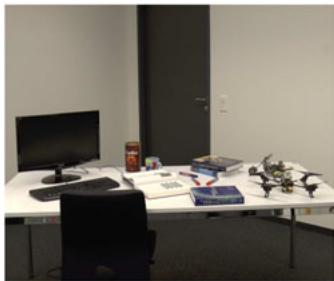
(a)
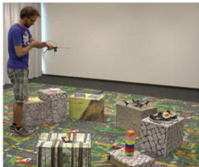
(b)
Fig. 6. Impressions of the datasets recorded with the motion capture system. (a) Desk dataset. (b) Multi-keyframe dataset.
DAVIS [22], which has a spatial resolution of pixels, a temporal resolution in the order of microseconds and a very high dynamic range (130 dB). The DAVIS combines in the same pixel array an event sensor and a standard, frame-based sensor. EVO uses only the event stream; the frames of the DAVIS are shown in the following figures only for illustration purposes.
A. Accuracy Evaluation
To illustrate the robustness and accuracy of EVO, we evaluate it on two different sequences with ground truth recorded using a motion capture system (Optitrack): the first one features a single-keyframe trajectory characterized by fast, aggressive motion (up to 780 ◦/s) in an office environment [Fig. 6(a)]; the second sequence [Fig. 6(b)] features a multi-keyframe trajectory. Both trajectories show strong illumination changes generated by switching the room lights off and on.
The two datasets we used to evaluate the performance are:
1) Single-Keyframe Trajectory, Aggressive Motion: This sequence contains aggressive 6-DOF motion. The results are presented in Fig. 7. The times at which the room lights are switched off and on again are marked. EVO is able to track the whole sequence with high accuracy (2◦ rotation error and 2 cm translation error on average, over a 35 m trajectory, that is 0.057% relative position error).
2) Multi-Keyframe Trajectory: The camera is moved along a long trajectory over a scene containing several boxes. The results are presented in Figs. 8 and 9. The times at which the room lights are switched off and on again are marked. As observed, EVO tracks the whole sequence with remarkable accuracy (6 cm drift in translation, and a few degrees (3◦) in rotational drift, over a 30 m trajectory, that is, 0.2% relative position error). Note that we do not perform any map or pose refinement (e.g., bundle adjustment); doing so would further reduce the drift.
B. Computational Performance
Since event cameras respond to visual changes in the scene, their output rate is not constant but rather a complex function of the apparent motion of the scene, the amount of texture, the sensor parameters, etc. Table II reports the event rate and EVO performance analysis in two typical scenarios: moderate- and high-speed motion on the desk sequence. On a standard laptop (Intel Core i7-4810MQ CPU @ 2.80 GHz), our implementation of EVO is able to process 1.5 million events/s on average, hence it can handle sequences with moderate speed in real time (see attached video). More precisely, we define the “real-time factor” (RTF) as the number of events processed per second divided by the incoming event rate (so that a factor above 1 means that the algorithm is faster than real-time). As shown in Table II, EVO is 1.25 to 3 times faster than real time for moderate speed scenarios while it is, at worse, two times slower than real time for high-speed motions.
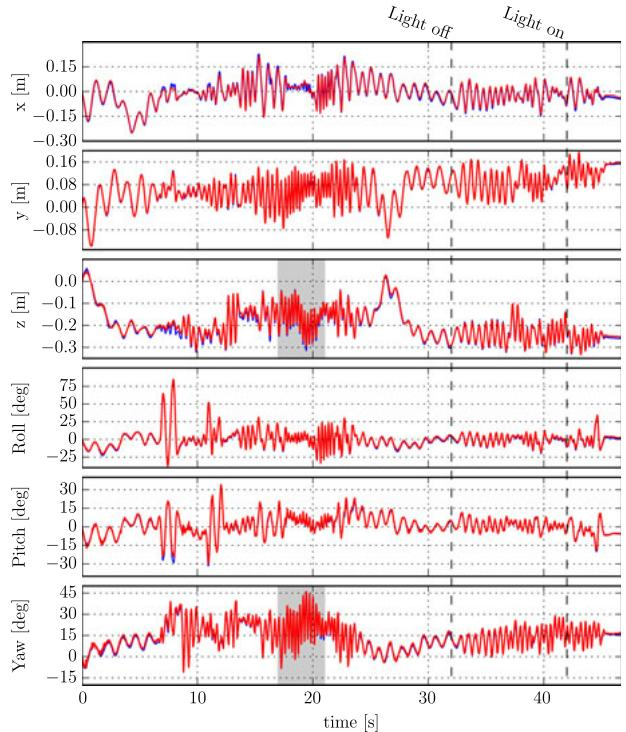
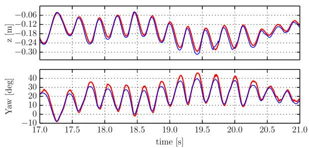
Fig. 7. Single-keyframe trajectory, aggressive motion. Top: Estimated trajectory (blue) compared against ground truth (red): EVO can track aggressive motion with remarkable accuracy. The dashed lines mark the times at which the room lights were switched off and on again in order to generate strong illumination changes. Bottom: Zoom on the highlighted regions of z and yaw.
C. Experiments in Outdoor Environment
1) Outdoor Sequence With Aggressive Motion: This sequence was recorded outdoors, in a busy street and features aggressive motions. Additionally, there are several moving elements in the scene (pedestrians, bicycles, etc.) generating outlier events. The sequence is shown in Fig. 11. For illustration, we also display an image reconstructed using the output of our pipeline. See also the video attached to this paper for further impressions of this dataset. Since a motion-capture system is not available outdoors, we used a state-of-the-art VO method (SVO [14]) on the intensity frames of the DAVIS for comparison (Fig. 10).
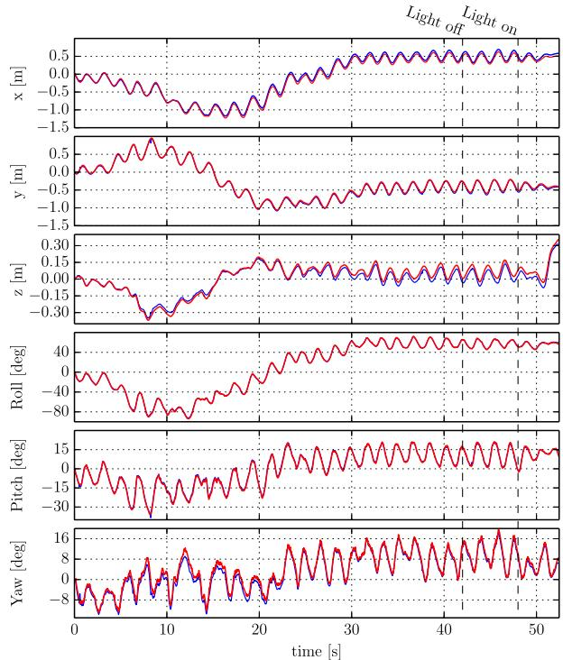
Fig. 8. Multi-keyframe trajectory. Estimated trajectory (blue) compared against ground truth (red): EVO can track long trajectories without much drift. The average drift over the 30 m trajectory is 6 cm. The dashed lines mark the times at which the room lights were switched off and on again in order to generate strong illumination changes.
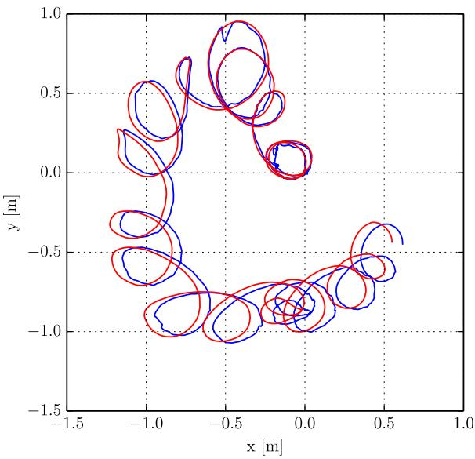
Fig. 9. Multi-keyframe trajectory. Top view of the estimated trajectory (blue) against ground truth (red).
2) Outdoor Sequence, Pointing at the Sun: To highlight further the potential of EVO, we show another outdoor sequence where we pointed the event camera directly at the sun, and used a road sign to cover/uncover the sun multiple times as the camera moved (Fig. 12). EVO was able to track the motion successfully despite the considerable dynamic range of the scene (see attached video).
TABLE II
PERFORMANCE OF EVO ON A LAPTOP COMPUTER IN TWO TYPICAL SCENARIOS: MODERATE AND HIGH SPEED, ON THE DESK SEQUENCE (MEAN DEPTH: 1 M)
| Moderate speed | High speed | |
| Event rate (million ev/s) | ||
| Linear velocity (m/s) | ||
| Angular velocity (deg/s) | ||
| Real-time factor (RTF) |
Our implementation can process approximately 1.5 million events/s.
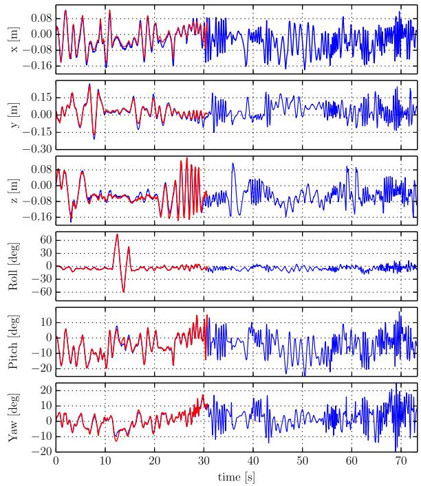
Fig. 10. EVO (blue) vs. SVO (red) on outdoor dataset. the framebased VO system (SVO) fails because of the aggressive motion while EVO keeps tracking until the end of the trajectory.
D. Discussion
Our method provides joint estimation of depth and 6-DOF motion with pure event data, in natural scenes. EVO is very accurate, even in very challenging scenarios, currently inaccessible to VO algorithms for standard cameras (e.g., aggressive motion, abrupt changes of illumination, high dynamic range scenes). It is lightweight enough to run in real-time on computationally constrained platforms.
Our method is purely geometric (with building blocks such as event back-projection and edge-map registration) and exploits the natural strengths of event cameras as moving edge detectors, both in tracking (edge-map registration), and in mapping (structure extraction by edge back-projection from multiple viewpoints). Hence, intensity reconstruction is not needed for accurate tracking and mapping. This eliminates a source of errors and increases the speed of map convergence.
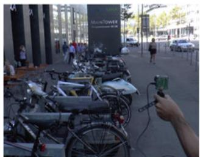
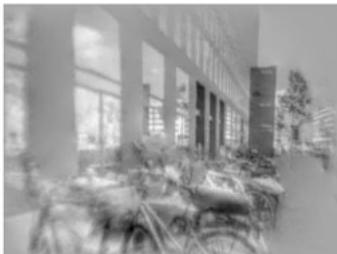
Fig. 11. Impressions of the outdoor dataset. Left: image from the DAVIS. Right: reconstructed image using the output of EVO. Observe that the reconstructed image is not over- or under-exposed.
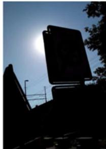
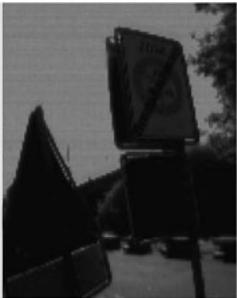
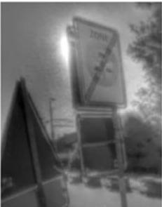
Fig. 12. Outdoor sequence, pointing at the sun. Left: View from a standard camera, showing severe under-exposure on the foreground. Middle: Frame from the DAVIS, showing severe under- and over-exposed areas. Right: HDR image reconstructed using the output of EVO.
Unlike traditional visual odometry systems, EVO does not explicitly solve the data association problem, neither in the tracking nor in the mapping part. In the tracking part, we solve the data association indirectly in three steps: (i) we create an intermediate representation in the form of an edge-like image by accumulating events; (ii) we borrow the implicit pixel-topixel data association typical of photometric image alignment methods; (iii) we sparsify the representation using random sampling (inspired by stochastic gradient descent). This increases the speed of the tracker and improves the robustness to occlusions.
While the speed of convergence of the map is relatively fast (it typically takes ∼2 million events, which corresponds roughly to 1-4 seconds, depending on the event rate), it is still slow compared to the velocities that the tracker can cope with, and thus limits the speed of the whole VO pipeline in a scenario where multiple keyframes would be required. This is however not a problem for many applications.
VI. CONCLUSION
We have presented EVO, an event-based visual odometry pipeline that successfully leverages both the high temporal resolution and high dynamic range capabilities of event cameras. We have shown that by extracting only geometric information from the event stream we are able to compute the position and orientation of the camera with high precision position error and orientation error), as well as obtain a semi-dense 3D map of the environment. The method is very efficient and runs in real-time on the CPU of a conventional laptop or, with reduced precision, even on mobile platforms as commonly seen on MAVs.
REFERENCES
[1] P. Lichtsteiner, C. Posch, and T. Delbruck, “A 128× 128 120 dB 15 μs latency asynchronous temporal contrast vision sensor,” IEEE J. Solid-State Circuits, vol. 43, no. 2, pp. 566–576, Feb. 2008.
[2] E. Mueggler, B. Huber, and D. Scaramuzza, “Event-based, 6-DOF pose tracking for high-speed maneuvers,” in Proc. IEEE/RSJ Int. Conf. Intell. Robots Syst., 2014, pp. 1–8.
[3] E. Mueggler, N. Baumli, F. Fontana, and D. Scaramuzza, “Towards evasive maneuvers with quadrotors using dynamic vision sensors,” in Proc. Eur. Conf. Mobile Robots, 2015, pp. 1–8.
[4] M. Cook, L. Gugelmann, F. Jug, C. Krautz, and A. Steger, “Interacting maps for fast visual interpretation,” in Proc. Int. Joint Conf. Neural Netw., 2011, pp. 770–776.
[5] D. Weikersdorfer, R. Hoffmann, and J. Conradt, “Simultaneous localization and mapping for event-based vision systems,” in Proc. 9th Int. Conf. Comput. Vis. Syst., 2013, pp. 133–142.
[6] H. Kim, A. Handa, R. Benosman, S.-H. Ieng, and A. J. Davison, “Simultaneous mosaicing and tracking with an event camera,” in Proc. Brit. Mach. Vis. Conf., Nottingham, U.K., 2014, pp. 1–12.
[7] A. Censi and D. Scaramuzza, “Low-latency event-based visual odometry,” in Proc. IEEE Int. Conf. Robot. Autom., 2014, pp. 703–710.
[8] D. Weikersdorfer, D. B. Adrian, D. Cremers, and J. Conradt, “Event-based 3D SLAM with a depth-augmented dynamic vision sensor,” in Proc. IEEE Int. Conf. Robot. Autom., 2014, pp. 359–364.
[9] G. Gallego, C. Forster, E. Mueggler, and D. Scaramuzza, “Event-based camera pose tracking using a generative event model,” Comput. Res. Repository, 2015. [Online]. Available: http://arxiv.org/abs/1510.01972
[10] H. Rebecq, G. Gallego, and D. Scaramuzza, “EMVS: Event-based multiview stereo,” in Proc. Brit. Mach. Vis. Conf., York, U.K., 2016, pp. 1–11.
[11] B. Kueng, E. Mueggler, G. Gallego, and D. Scaramuzza, “Low-latency visual odometry using event-based feature tracks,” in Proc. IEEE/RSJ Int. Conf. Intell. Robots Syst., 2016, pp. 1–8.
[12] H. Kim, S. Leutenegger, and A. J. Davison, “Real-time 3D reconstruction and 6-DoF tracking with an event camera,” in Proc. Eur. Conf. Comput. Vis., 2016, pp. 349–364.
[13] G. Klein and D. Murray, “Parallel tracking and mapping for small AR workspaces,” in Proc. IEEE ACM Int. Symp. Mixed Augmented Reality, Nara, Japan, Nov. 2007, pp. 225–234.
[14] C. Forster, M. Pizzoli, and D. Scaramuzza, “SVO: Fast semi-direct monocular visual odometry,” in Proc. IEEE Int. Conf. Robot. Autom., 2014, pp. 15–22.
[15] J. Engel, J. Schops, and D. Cremers, “LSD-SLAM: Large-scale direct¨ monocular SLAM,” in Proc. Eur. Conf. Comput. Vis., 2014, pp. 834–849.
[16] S. Baker and I. Matthews, “Lucas-kanade 20 years on: A unifying framework,” Int. J. Comput. Vis., vol. 56, no. 3, pp. 221–255, 2004.
[17] A. Crivellaro, P. Fua, and V. Lepetit, “Dense methods for image alignment with an application to 3D tracking,” Ecole Polytechnique Federale de Lausanne, Lausanne, Switzerland, Tech. Rep. 197866, 2014.
[18] Y. Ma, S. Soatto, J. Kosecka, and S. S. Sastry, An Invitation to 3-D Vision: From Images to Geometric Models. Berlin, Germany Springer-Verlag, 2004.
[19] P. Corke, Robotics, Vision and Control: Fundamental Algorithms in MATLAB (ser. Springer Tracts in Advanced Robotics). Berlin, Germany: Springer-Verlag, 2011.
[20] G. Gallego et al., “Event-based, 6-DOF camera tracking for highspeed applications,” Comput. Res. Repository, 2016. [Online]. Available: http://arxiv.org/abs/1607.03468
[21] R. B. Rusu and S. Cousins, “3D is here: Point Cloud Library (PCL),” in Proc. IEEE Int. Conf. Robot. Autom., Shanghai, China, May 2011, pp. 1–4.
[22] C. Brandli, R. Berner, M. Yang, S.-C. Liu, and T. Delbruck, “A 240 × 180 130 dB 3 us latency global shutter spatiotemporal vision sensor,” IEEE J. Solid-State Circuits, vol. 49, no. 10, pp. 2333–2341, 2014.
md/2017_EVO.md 预渲染生成（OCR 语料，插图取自原文）。
公式以 MathML 呈现，浏览器原生渲染，不依赖外部脚本或字体 CDN。